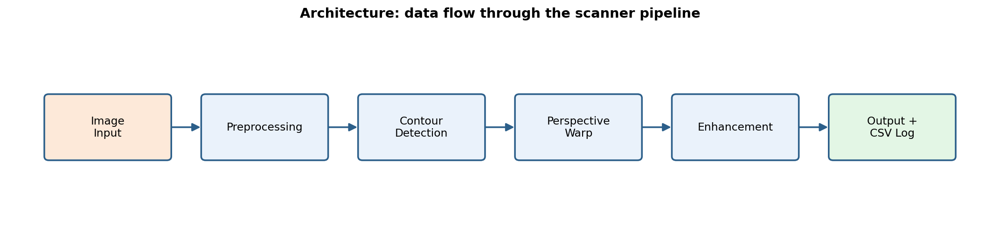
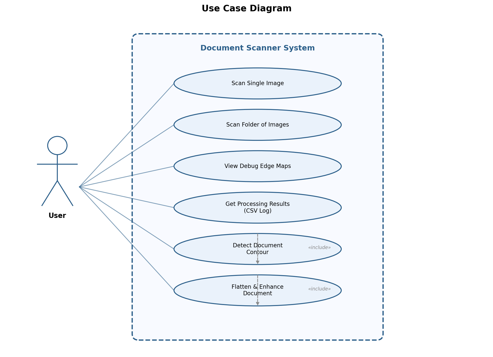
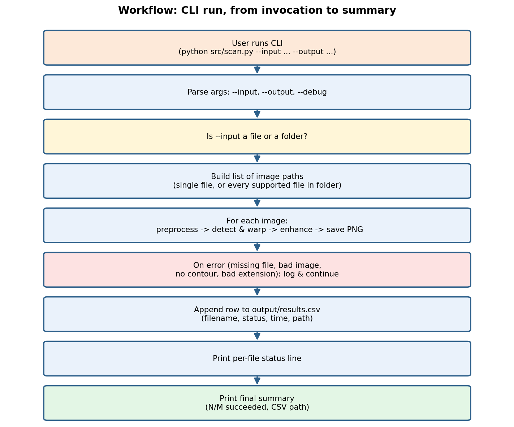
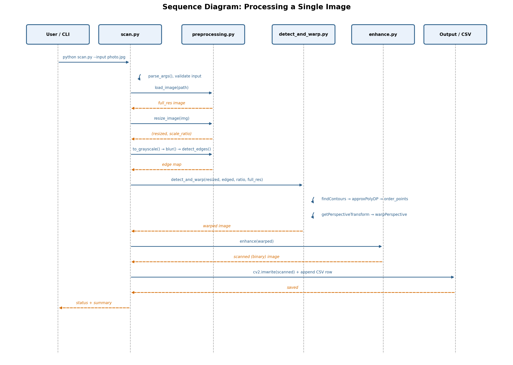
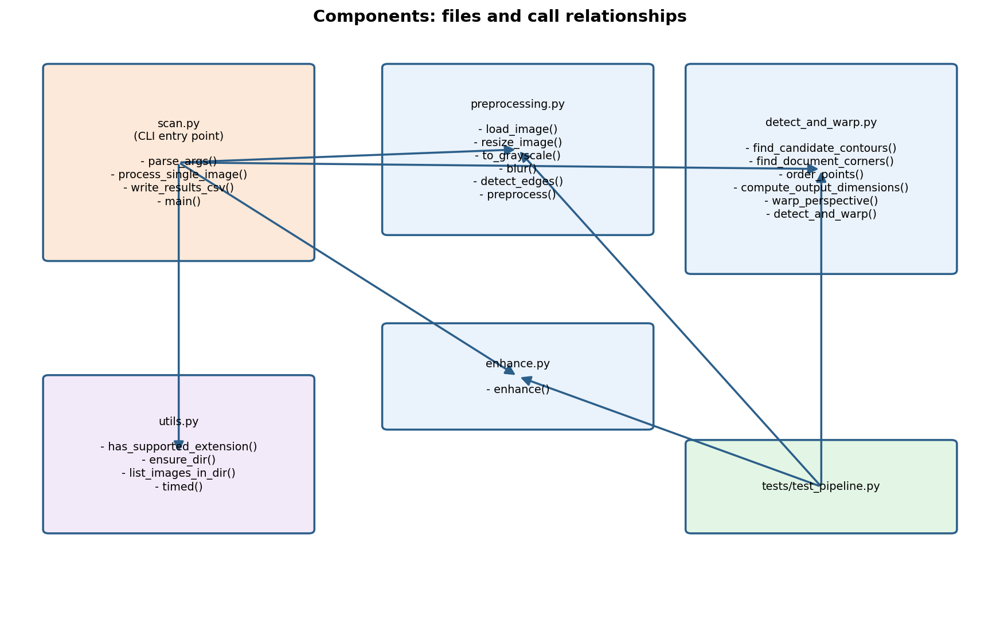
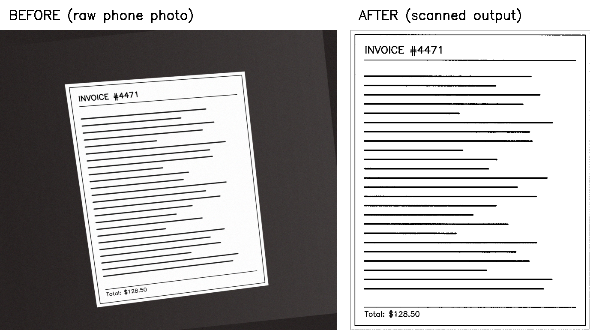

2. Introduction
This project implements a command-line document scanner that takes a photo of a printed document or receipt — taken at an angle, on an ordinary desk, with a normal phone camera — and produces a clean, flattened, high-contrast image that looks like it came from a real flatbed scanner.
The tool automates three steps that would otherwise require manual editing: detecting the document within a cluttered photo, correcting perspective distortion so the page is perfectly flat, and normalizing lighting and contrast so the output is a crisp black-text-on-white-background scan. It processes single images or entire folders in batch, logging every outcome to a CSV file for auditability.
The project is built from first principles using Python and OpenCV, with no pre-built scanning libraries. It follows a classic computer-vision pipeline: Canny edge detection → contour approximation → four-point perspective transform → adaptive thresholding.
3. Problem Statement
A phone photo of a document has three fundamental problems that a scanner output does not:
- Perspective distortion — the page is rarely photographed dead-on; it is typically tilted, rotated, and keystoned.
- Uneven lighting — desk lamps, window light, and shadows produce inconsistent brightness across the page.
- Background clutter — the desk, other objects, and shadows surround the page in the frame.
The goal is to build a tool that automatically detects the document within the frame, undoes the perspective distortion, removes the background, and normalizes the lighting — producing output comparable to a flatbed scanner, for a batch of images, without any manual cropping or adjustment.
4. Functional Requirements
| # | Requirement | Description |
|---|---|---|
| FR-1 | Image Loading | Accept JPEG, PNG, BMP, TIFF image files as input. Reject invalid or corrupt files with a clear error message. |
| FR-2 | Document Detection | Automatically detect the document's four corners within a photo using edge detection and contour analysis. |
| FR-3 | Perspective Correction | Warp the detected document into a flat, top-down rectangular view using a four-point perspective transform. |
| FR-4 | Image Enhancement | Apply adaptive thresholding to produce a clean, high-contrast scanned appearance. |
| FR-5 | Batch Processing | Process an entire folder of images in a single CLI invocation. |
| FR-6 | Debug Mode | Optionally save intermediate edge-map images alongside final outputs when --debug is specified. |
| FR-7 | CSV Logging | Write a results.csv file with filename, status, processing time, output path, and error for each processed image. |
| FR-8 | Graceful Error Handling | Handle missing files, invalid images, unsupported extensions, and failed contour detection per-file without crashing the batch. |
| FR-9 | Fallback Detection | When no 4-point contour is found, fall back to the largest contour's bounding rectangle rather than failing entirely. |
5. Non-functional Requirements
| # | Requirement | Description |
|---|---|---|
| NFR-1 | Performance | Process a single 1600×1800 image in under 0.1 seconds on commodity hardware. Detection is done on a resized (~900 px) image to keep contour-finding fast. |
| NFR-2 | Output Quality | Warp is performed on the full-resolution original image (not the resized version) to preserve output sharpness. |
| NFR-3 | Modularity | Each processing stage (preprocessing, detection/warp, enhancement) is in its own Python module with clear, documented interfaces. |
| NFR-4 | Testability | All modules are independently testable with a comprehensive pytest suite. All 12 tests pass. |
| NFR-5 | Portability | Runs on Windows, macOS, and Linux. Dependencies are limited to opencv-python-headless, numpy, and pytest. |
| NFR-6 | Maintainability | Every function has a docstring explaining what it does and why. Git history has one commit per module for clean traceability. |
6. System Architecture
The system follows a linear pipeline architecture. Each image passes through
three sequential processing modules, coordinated by the CLI entry point (scan.py),
which also handles argument parsing, error management, and CSV logging.

Module Breakdown
| Module | File | Responsibility |
|---|---|---|
| Preprocessing | preprocessing.py | Load → resize (track scale ratio) → grayscale → Gaussian blur → Canny edge detection |
| Detection & Warp | detect_and_warp.py | Find contours → approximate to polygon → order 4 corners → compute output dimensions → perspective warp at full resolution |
| Enhancement | enhance.py | Convert warped image to grayscale → adaptive Gaussian threshold for scanned appearance |
| CLI / Orchestration | scan.py | Parse CLI args → validate input → loop over images → call modules → save output → write CSV log |
| Utilities | utils.py | Supported-extension check, directory creation, image listing, timing decorator |
7. Design Diagrams
7.1 Use Case Diagram
The system has a single actor (the User) who interacts with the CLI to scan images. Internal use cases like contour detection and perspective warping are included automatically as part of the scan process.

7.2 Workflow Diagram
This shows the end-to-end flow when a user invokes the CLI, from argument parsing through per-image processing to the final summary.

7.3 Sequence Diagram
The sequence diagram traces the method-level interactions between all components when processing a single image, showing calls and return values.

7.4 Class / Component Diagram
This diagram shows the actual file structure, the functions each module exposes, and the call relationships between them (including the test suite).

7.5 ER Diagram
This project does not use a database or persistent storage beyond the filesystem.
Output is written as PNG image files and a flat CSV log (results.csv).
The CSV schema is:
| Column | Type | Description |
|---|---|---|
filename | string | Base name of the input image file |
status | string | success, success (fallback contour), or fail |
processing_time_s | float | Wall-clock processing time in seconds |
output_path | string | Path to the output scanned image (empty on failure) |
error | string | Error message (empty on success) |
8. Design Decisions & Rationale
8.1 Resize for Detection, Warp at Full Resolution
Phone cameras produce images 3000+ pixels wide. Running contour detection at that resolution
is slow and picks up noise. The solution: resize to ~900 px for detection, but keep the original
full-resolution image and multiply the detected corner coordinates by the
scale_ratio before warping. This keeps detection fast while preserving output quality.
8.2 Canny Thresholds (75 / 200)
Too low → noise everywhere (paper grain, desk texture becomes edges). Too high → faint document edges are missed. The 75/200 pair was chosen empirically as a good starting point for well-lit photos on contrasting backgrounds. These could be made adaptive in future work.
8.3 Contour Approximation with approxPolyDP
Rather than trying to detect straight lines or corners directly, the pipeline finds all closed
contours and simplifies each one to a polygon. If a contour simplifies to exactly 4 points,
it is very likely a rectangular document. The epsilon parameter (0.02 × perimeter)
controls how aggressively bumpy contours are simplified.
8.4 Sum/Difference Trick for Corner Ordering
approxPolyDP returns points in whatever order the contour was traced —
not necessarily top-left, top-right, etc. The perspective transform requires a specific order.
The sum/difference trick (top-left has smallest x+y, bottom-right has largest, etc.)
provides a rotation-invariant ordering without needing to know the page's actual angle.
8.5 Adaptive vs. Global Thresholding
A global threshold (one cutoff for the entire image) fails when lighting varies across the page — one corner is too dark, another too bright. Adaptive Gaussian thresholding calculates the threshold locally for each pixel neighborhood (block size 11), handling uneven desk lighting gracefully.
8.6 Fallback to Bounding Rectangle
On low-contrast or messy backgrounds, no contour approximates cleanly to 4 points.
Rather than failing hard, the pipeline falls back to the bounding rectangle of the largest
contour. This produces a less-accurate crop (no rotation correction) but is far better than
no output at all. The fallback is flagged in results.csv.
9. Implementation Details
9.1 Project Structure
scanner-project/
├── src/
│ ├── preprocessing.py # Module 1: load, resize, grayscale, blur, Canny
│ ├── detect_and_warp.py # Module 2: contours, corner ordering, perspective warp
│ ├── enhance.py # Module 3: adaptive thresholding
│ ├── scan.py # CLI entry point (argparse + orchestration)
│ └── utils.py # Shared helpers
├── data/samples/ # Test images (6 synthetic + 1 invalid)
├── output/ # Scan results + results.csv
├── tests/
│ └── test_pipeline.py # 12 pytest tests
├── docs/ # All diagrams + before/after screenshot
├── scripts/ # Sample & diagram generator scripts
├── README.md
├── statement.md
└── requirements.txt9.2 Module 1 — Preprocessing (preprocessing.py)
Key functions and their roles:
load_image(path)— reads withcv2.imread(); raisesValueErrorif the file is missing, corrupt, or unsupported.resize_image(img, target_dim=900)— shrinks the longer side to 900 px usingINTER_AREAinterpolation; returns(resized, scale_ratio)wherescale_ratio = original_height / resized_height.to_grayscale(img)—cv2.cvtColor(BGR2GRAY).blur(gray, ksize=(5,5))—cv2.GaussianBlurto suppress fine noise/texture.detect_edges(blurred, 75, 200)—cv2.Cannyedge detection.preprocess(path)— runs the full pipeline, returns(resized_original, edged, scale_ratio).
9.3 Module 2 — Detection & Warp (detect_and_warp.py)
find_candidate_contours(edged, top_n=5)—cv2.findContours(RETR_LIST, CHAIN_APPROX_SIMPLE), sorted by area descending, top 5 kept.find_document_corners(edged)— loops through candidates, appliescv2.approxPolyDP(0.02 × perimeter); returns the first 4-point polygon found, or falls back to the largest contour's bounding rectangle.order_points(pts)— orders as [TL, TR, BR, BL] using sum/difference.compute_output_dimensions(rect)— computesmaxWidthandmaxHeightfrom corner-to-corner distances.warp_perspective(original, ordered_pts)— defines destination rectangle, callscv2.getPerspectiveTransform+cv2.warpPerspective.detect_and_warp(resized, edged, scale_ratio, full_res)— full pipeline; multiplies detected corners byscale_ratiobefore warping the full-resolution original.
9.4 Module 3 — Enhancement (enhance.py)
enhance(warped)— converts to grayscale, then appliescv2.adaptiveThreshold(255, ADAPTIVE_THRESH_GAUSSIAN_C, THRESH_BINARY, 11, 10)for a crisp scanned appearance.
9.5 CLI (scan.py)
The CLI uses argparse with three arguments:
| Flag | Required | Description |
|---|---|---|
--input | Yes | Path to a single image file, or a folder of images |
--output | No | Output directory (default: ./output) |
--debug | No | Also save intermediate Canny edge-map images |
For each image, process_single_image() runs all three modules inside a
try/except block, records the outcome (success/fail, timing, output path, error message),
and appends a row to results.csv.
9.6 Git History
The repository has 7 commits, one per logical step:
| # | Commit | Description |
|---|---|---|
| 1 | cf4f63b | Initial commit: repo skeleton, requirements, .gitignore |
| 2 | cf38266 | Module 1: preprocessing |
| 3 | db9ac72 | Module 2: contour detection & perspective warp |
| 4 | b9a13f8 | Module 3: enhancement + CLI + utils |
| 5 | d017dde | Pytest test suite |
| 6 | c9e7abe | Diagrams |
| 7 | ac891e3 | README + project report |
10. Screenshots / Results
10.1 Before & After

10.2 CLI Output
$ python src/scan.py --input data/samples/ --output output/ --debug
[FAIL] not_an_image.jpg ( 0.000s) Could not read '...' as an image
[OK ] photo1.jpg ( 0.038s) output/photo1_scanned.png
[OK ] photo2.jpg ( 0.035s) output/photo2_scanned.png
[OK ] photo3.jpg ( 0.032s) output/photo3_scanned.png
[OK ] photo4.jpg ( 0.022s) output/photo4_scanned.png
[OK ] photo5.jpg ( 0.030s) output/photo5_scanned.png
[OK ] photo6_low_contrast.jpg ( 0.027s) output/photo6_low_contrast_scanned.png
Summary: 6/7 succeeded. Log written to output/results.csv10.3 Results CSV
| filename | status | time (s) | output_path | error |
|---|---|---|---|---|
| not_an_image.jpg | fail | 0.0001 | — | Could not read as an image |
| photo1.jpg | success | 0.0498 | output/photo1_scanned.png | — |
| photo2.jpg | success | 0.0451 | output/photo2_scanned.png | — |
| photo3.jpg | success | 0.0423 | output/photo3_scanned.png | — |
| photo4.jpg | success (fallback) | 0.0249 | output/photo4_scanned.png | — |
| photo5.jpg | success | 0.0436 | output/photo5_scanned.png | — |
| photo6_low_contrast.jpg | success | 0.0386 | output/photo6_low_contrast_scanned.png | — |
10.4 Test Results
$ pytest tests/ -v
tests/test_pipeline.py::test_preprocessing_returns_correct_shape_and_type PASSED
tests/test_pipeline.py::test_resize_image_preserves_aspect_ratio PASSED
tests/test_pipeline.py::test_grayscale_and_blur_shapes PASSED
tests/test_pipeline.py::test_load_image_missing_file_raises PASSED
tests/test_pipeline.py::test_load_image_invalid_file_raises PASSED
tests/test_pipeline.py::test_order_points_orders_correctly PASSED
tests/test_pipeline.py::test_compute_output_dimensions_is_positive PASSED
tests/test_pipeline.py::test_known_good_sample_produces_warped_output PASSED
tests/test_pipeline.py::test_find_document_corners_returns_four_points PASSED
tests/test_pipeline.py::test_no_contours_raises_document_not_found_error PASSED
tests/test_pipeline.py::test_enhance_produces_binary_looking_image PASSED
tests/test_pipeline.py::test_end_to_end_pipeline_runs_without_crashing PASSED
============================= 12 passed in 0.49s ==============================11. Testing Approach
The project uses pytest with 12 test cases organized by module.
Tests use both synthetic images (generated programmatically) and the sample images
in data/samples/.
11.1 Preprocessing Tests
| Test | What It Verifies |
|---|---|
test_preprocessing_returns_correct_shape_and_type | Output is the right ndarray shape (HxWx3 color, HxW binary edges), dtype uint8, and resized correctly |
test_resize_image_preserves_aspect_ratio | Aspect ratio is preserved after resize; longer side equals target_dim |
test_grayscale_and_blur_shapes | Grayscale output is 2D; blur preserves shape |
test_load_image_missing_file_raises | Non-existent file raises ValueError, not crash |
test_load_image_invalid_file_raises | Non-image file raises ValueError |
11.2 Detection & Warp Tests
| Test | What It Verifies |
|---|---|
test_order_points_orders_correctly | Shuffled points are reordered to [TL, TR, BR, BL] |
test_compute_output_dimensions_is_positive | Known rectangle → correct width and height |
test_known_good_sample_produces_warped_output | Real sample → warped output is portrait, reasonably large |
test_find_document_corners_returns_four_points | Returns exactly 4 corner points |
test_no_contours_raises_document_not_found_error | Blank edge map → DocumentNotFoundError |
11.3 Enhancement & End-to-End Tests
| Test | What It Verifies |
|---|---|
test_enhance_produces_binary_looking_image | Output is strictly binary (only 0 and 255 values) |
test_end_to_end_pipeline_runs_without_crashing | Smoke test: every real sample makes it through the full pipeline |
12. Challenges Faced
Challenge 1: Mapping Corners Back to Full Resolution
Detecting on a resized image but warping the original meant every corner coordinate needed
the scale_ratio multiplier applied before warpPerspective.
It was easy to accidentally warp the small image instead, producing a blurry low-resolution
output. The fix was to keep the full-resolution image in memory alongside the resized one,
and explicitly multiply coordinates: ordered_full_res = ordered * scale_ratio.
Challenge 2: Corner Ordering
approxPolyDP returns points in whatever order the contour happened to be traced.
The perspective transform needs them in a specific [TL, TR, BR, BL] order.
Initially, the warped output was rotated or flipped. The sum/difference trick
(x+y for TL/BR, x−y for TR/BL) solved this reliably regardless
of the page's rotation angle.
Challenge 3: Low-Contrast Backgrounds
When the page barely contrasts with the desk (e.g., white page on a light-beige desk), Canny edges around the page boundary are weak or broken, so no contour approximates to 4 points. The bounding-rectangle fallback handles this, but at the cost of not correcting rotation on skewed pages.
Challenge 4: Canny Threshold Tuning
The two Canny thresholds (low=75, high=200) are sensitive to lighting conditions. Too low picks up paper grain and desk texture as edges; too high loses the document's edge entirely. The current values work well for the test set but would benefit from auto-tuning based on image statistics.
13. Learnings & Key Takeaways
- The importance of preprocessing. Edge detection quality depends almost entirely on proper resizing, grayscale conversion, and Gaussian blur. Without blur, Canny picks up thousands of tiny irrelevant edges from paper texture.
- Contour approximation is powerful but fragile.
approxPolyDPelegantly simplifies complex contours to polygons, but its success depends on clean, unbroken edges — which depends on background contrast, lighting, and threshold tuning. - Coordinate system awareness matters. Working at one resolution for speed but outputting at another for quality requires careful bookkeeping of scale factors. This is a common pattern in real CV systems.
- Graceful degradation > hard failure. The fallback to a bounding rectangle when no 4-point contour is found keeps the tool useful in edge cases, even if the output isn't perfect. Logging the fallback in the CSV lets the user identify which results to review manually.
- Adaptive thresholding vs. global thresholding. The visual difference between a global threshold (dark corners, blown-out highlights) and adaptive thresholding (clean across the whole page) is dramatic and immediately visible in the output.
- End-to-end testing catches integration bugs. Unit tests on individual functions are necessary but not sufficient. The end-to-end smoke test across all sample images caught bugs in the module-to-module data flow that unit tests missed.
- Clean commit history aids debugging. Having one commit per module
made it easy to
git bisectwhen a regression appeared and to review each module's implementation in isolation.
14. Future Enhancements
| # | Enhancement | Description |
|---|---|---|
| 1 | Auto-tuned Canny thresholds | Use image statistics (e.g., Otsu's method or median-based thresholds) to automatically select optimal Canny parameters per image, removing the need for manual tuning. |
| 2 | Rotation / orientation correction | Detect whether the page is upside-down or sideways (e.g., using text orientation detection via Tesseract) and auto-rotate. |
| 3 | Multi-page PDF assembly | Add a --pdf flag that combines multiple scanned images into a single PDF document using img2pdf or reportlab. |
| 4 | OCR integration | Pass the enhanced output through Tesseract OCR to extract text, creating a searchable PDF or a .txt sidecar file. |
| 5 | GUI / Web interface | Wrap the CLI in a simple web UI (e.g., Flask/Streamlit) for drag-and-drop scanning without a terminal. |
| 6 | Real-time camera mode | Use a webcam feed to detect the document in real-time, guiding the user to position the page, then capture and scan automatically. |
| 7 | Improved fallback detection | Use Hough line detection or deep-learning-based corner detection (e.g., a pre-trained model) for cases where approxPolyDP fails. |
15. References
- OpenCV Documentation — Canny Edge Detection. https://docs.opencv.org/4.x/da/d22/tutorial_py_canny.html
- OpenCV Documentation — Contours in OpenCV. https://docs.opencv.org/4.x/d4/d73/tutorial_py_contours_begin.html
- OpenCV Documentation — Geometric Transformations of Images. https://docs.opencv.org/4.x/da/d6e/tutorial_py_geometric_transformations.html
- OpenCV Documentation — Image Thresholding (Adaptive). https://docs.opencv.org/4.x/d7/d4d/tutorial_py_thresholding.html
- OpenCV API Reference — cv2.findContours, cv2.approxPolyDP, cv2.getPerspectiveTransform, cv2.warpPerspective. https://docs.opencv.org/4.x/
- Adrian Rosebrock — "4 Point OpenCV getPerspective Transform Example", PyImageSearch. https://pyimagesearch.com/2014/08/25/4-point-opencv-getperspective-transform-example/
- Adrian Rosebrock — "How to Build a Kick-Ass Mobile Document Scanner", PyImageSearch. https://pyimagesearch.com/2014/09/01/build-kick-ass-mobile-document-scanner-just-5-minutes/
- NumPy Documentation — NumPy Reference. https://numpy.org/doc/stable/reference/
- Python Documentation — argparse — Parser for command-line options, arguments and sub-commands. https://docs.python.org/3/library/argparse.html
- pytest Documentation — Full pytest documentation. https://docs.pytest.org/en/stable/
End of Report — Document Scanner Project — Aneesh Bagad — September 2026